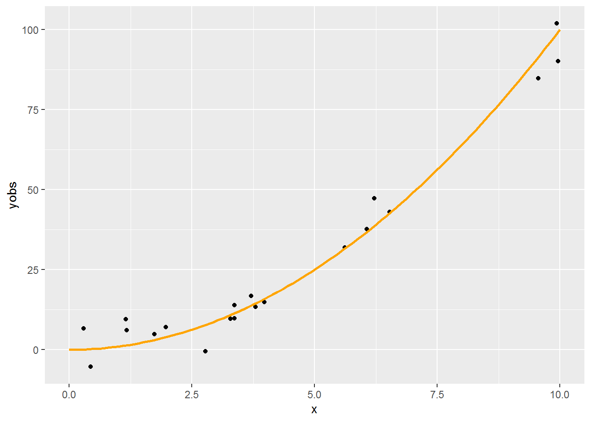
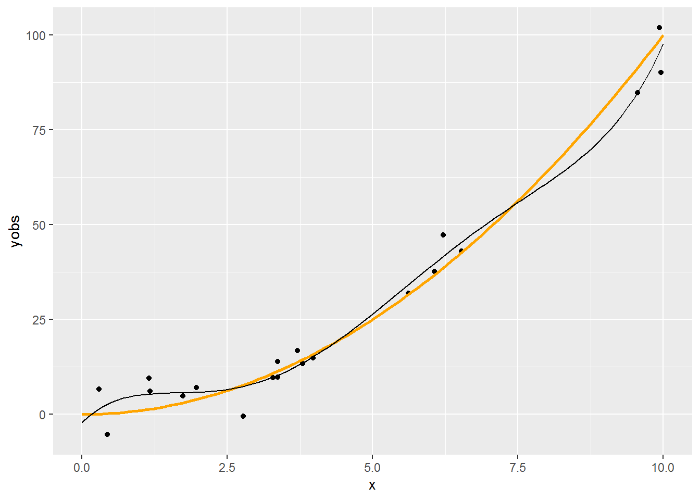
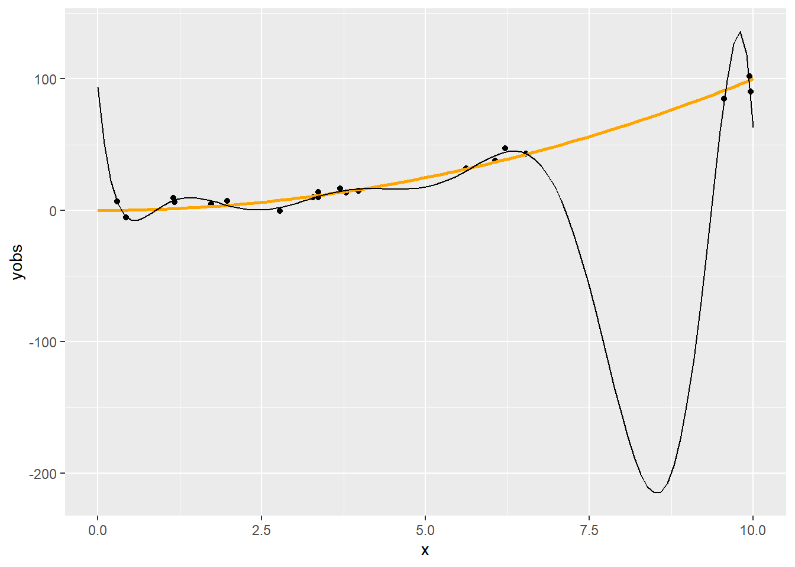
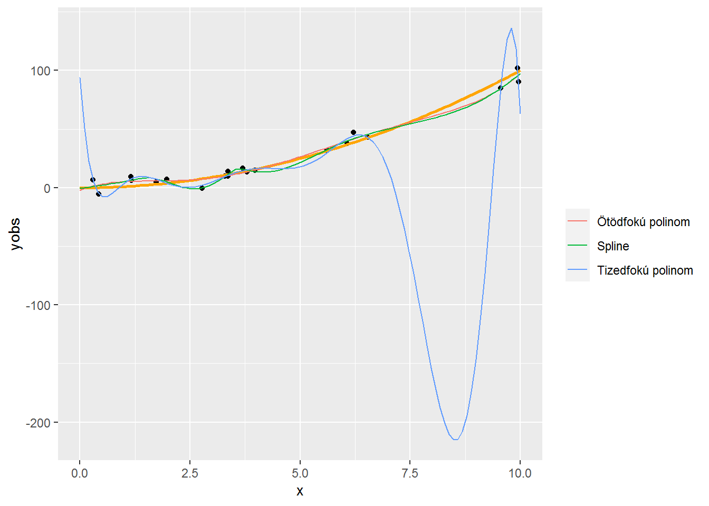
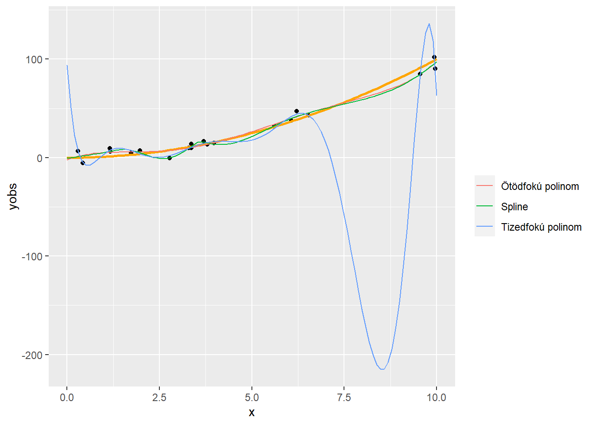

2 . fejezet Spline fogalma, lineáris regressziótól a spline-regresszióig
2.1 A regresszió
A regresszió legtöbb alkalmazott statisztikai terület talán legfontosabb eszköze
Regresszió: változók közti kapcsolat (illetve annak becslése minta alapján)
,,Kapcsolat" formalizálása: függvény a matematikai fogalmával, tehát keressük az \[ Y=f\left(X_1,X_2,\ldots,X_p\right)+\varepsilon=f\left(\mathbf{X}\right) \] függvényt
(\(Y\) eredményváltozó, \(X_i\)-k a magyarázó változók)
A regresszió legtöbb alkalmazott statisztikai terület talán legfontosabb eszköze
Regresszió: változók közti kapcsolat (illetve annak becslése minta alapján)
,,Kapcsolat" formalizálása: függvény a matematikai fogalmával, tehát keressük az \[ Y=f\left(X_1,X_2,\ldots,X_p\right)+\varepsilon=f\left(\mathbf{X}\right) \] függvényt
(\(Y\) eredményváltozó, \(X_i\)-k a magyarázó változók)
2.2 Regresszió becslése mintából
Paraméteres regresszió: ha a priori feltételezzük, hogy az \(f\) függvény valamilyen – paraméterek erejéig meghatározott – függvényformájú (az ,,alakja" ismert), és így a feladat e paraméterek becslésére redukálódik
Tipikus példa a lineáris regresszió: \(f\left(\mathbf{X}\right)=\beta_0+\beta_1 X_1 + \beta_2 X_2 + \ldots + \beta_p X_p=\mathbf{X}^T\pmb{\beta}\), így \(Y=\mathbf{X}^T\pmb{\beta}+\varepsilon\)
Ha rendelkezésre állnak az \(\left\{y_i,\mathbf{x}_i\right\}_{i=1}^n\) megfigyeléseink a háttéreloszlásra, akkor e mintából megbecsülhetjük a paramétereket például hagyományos legkisebb négyzetek (OLS) módszerével: \[ \widehat{\pmb{\beta}}=\argmin_{\mathbf{b}} \sum_{i=1}^n \left[Y_i-\mathbf{X}_i^T\mathbf{b}\right]^2=\left\| \mathbf{Y} - \mathbf{X}\mathbf{b} \right\|^2 \]
Itt tehát \(\mathbf{X}\) az a mátrix, amiben a magyarázó változók elé egy csupa 1 oszlopot szúrtunk, a neve modellmátrix vagy design mátrix
Paraméteres regresszió: ha a priori feltételezzük, hogy az \(f\) függvény valamilyen – paraméterek erejéig meghatározott – függvényformájú (az ,,alakja" ismert), és így a feladat e paraméterek becslésére redukálódik
Tipikus példa a lineáris regresszió: \(f\left(\mathbf{X}\right)=\beta_0+\beta_1 X_1 + \beta_2 X_2 + \ldots + \beta_p X_p=\mathbf{X}^T\pmb{\beta}\), így \(Y=\mathbf{X}^T\pmb{\beta}+\varepsilon\)
Ha rendelkezésre állnak az \(\left\{y_i,\mathbf{x}_i\right\}_{i=1}^n\) megfigyeléseink a háttéreloszlásra, akkor e mintából megbecsülhetjük a paramétereket például hagyományos legkisebb négyzetek (OLS) módszerével: \[ \widehat{\pmb{\beta}}=\argmin_{\mathbf{b}} \sum_{i=1}^n \left[Y_i-\mathbf{X}_i^T\mathbf{b}\right]^2=\left\| \mathbf{Y} - \mathbf{X}\mathbf{b} \right\|^2 \]
Itt tehát \(\mathbf{X}\) az a mátrix, amiben a magyarázó változók elé egy csupa 1 oszlopot szúrtunk, a neve modellmátrix vagy design mátrix
2.3 Paraméteres és nem-paraméteres regresszió
De cserében mindig ott lebeg felettünk a kérdés, hogy a függvényformára jó feltételezést tettünk-e (hiszen ez nem az adatokból következik, ezt ,,ráerőszakoljuk" az adatokra)
(Persze ezért van a modelldiagnosztika)
A nem-paraméteres regresszió flexibilis, olyan értelemben, hogy minden a priori megkötés nélkül követi azt, ami az adatokból következik (a valóság ritkán lineáris?)
Cserében nehezebb becsülni, és nem kapunk analitikus – jó esetben valamire hasznosítható – regressziós függvényt, nem lehet értelmesen interpolálni és extrapolálni (,,fordul a kocka" a paraméteres esethez képest)
De cserében mindig ott lebeg felettünk a kérdés, hogy a függvényformára jó feltételezést tettünk-e (hiszen ez nem az adatokból következik, ezt ,,ráerőszakoljuk" az adatokra)
(Persze ezért van a modelldiagnosztika)
A nem-paraméteres regresszió flexibilis, olyan értelemben, hogy minden a priori megkötés nélkül követi azt, ami az adatokból következik (a valóság ritkán lineáris?)
Cserében nehezebb becsülni, és nem kapunk analitikus – jó esetben valamire hasznosítható – regressziós függvényt, nem lehet értelmesen interpolálni és extrapolálni (,,fordul a kocka" a paraméteres esethez képest)
2.4 A lineáris regresszió kibővítése, nemlinearitások
Maradva a paraméteres keretben, arra azért mód van, hogy a függvényformát kibővítsük (és így flexibilisebbé tegyük)
Ezzel a különféle nemlineáris regressziókhoz jutunk el
E nemlinearitásoknak két alaptípusa van
-
Változójában nemlineáris modell (pl. \(\beta_0 + \beta_1 x + \beta_2 x^2\)): csak a szó ,,matematikai értelmében" nemlineáris, ugyanúgy becsülhető OLS-sel
-
Paraméterében nemlineáris modell (pl. \(\beta_0x_1^{\beta_1}x_2^{\beta_2}\)): felrúgja a lineáris struktúrát, így érdemileg más, csak linearizálás után, vagy NLS-sel becsülhető
Mi most az első esettel fogunk foglalkozni
Az itt látott ,,polinomiális regresszió" valóban nagyon gyakori módszer a flexibilitás növelésére
Maradva a paraméteres keretben, arra azért mód van, hogy a függvényformát kibővítsük (és így flexibilisebbé tegyük)
Ezzel a különféle nemlineáris regressziókhoz jutunk el
E nemlinearitásoknak két alaptípusa van
Változójában nemlineáris modell (pl. \(\beta_0 + \beta_1 x + \beta_2 x^2\)): csak a szó ,,matematikai értelmében" nemlineáris, ugyanúgy becsülhető OLS-sel
Paraméterében nemlineáris modell (pl. \(\beta_0x_1^{\beta_1}x_2^{\beta_2}\)): felrúgja a lineáris struktúrát, így érdemileg más, csak linearizálás után, vagy NLS-sel becsülhető
Mi most az első esettel fogunk foglalkozni
Az itt látott ,,polinomiális regresszió" valóban nagyon gyakori módszer a flexibilitás növelésére
2.5 Egy példa
Tekintsünk most egy másik példát, egy zajos másodfokú függvényt, kevesebb pontból:
Tekintsünk most egy másik példát, egy zajos másodfokú függvényt, kevesebb pontból:
n <- 20
x <- runif(n, 0, 10)
xgrid <- seq(0, 10, length.out = 100)
ygrid <- xgrid^2
yobs <- x^2 + rnorm(n, 0, 5)
SimData <- data.frame(x, xgrid, ygrid, yobs)
p <- ggplot(SimData) + geom_point(aes(x = x, y = yobs)) +
geom_line(aes(x = xgrid, y = ygrid), color = "orange", lwd = 1)
p
2.6 Regresszió ötödfokú polinommal
fit5 <- lm(yobs ~ poly(x, 5), data = SimData)
p + geom_line(data = data.frame(xgrid, pred = predict(fit5, data.frame(x = xgrid))),
aes(x = xgrid, y = pred))
2.7 Módosítás
Mondjuk, hogy nagyobb flexibilitásra vágyunk
- Például figyelembe akarjuk venni, hogy ez nem tűnik teljesen lineárisnak, vagy meg akarjuk ragadni a finomabb tendenciákat is
Emeljük a polinom fokszámát (ez nyilván növeli a flexibilitást, hiszen a kisebb fokszám nyilván speciális eset lesz), például 10-re
Szokás azt mondani, hogy a rang 5 illetve 10 (a polinom fokszáma, a becsülendő paraméterek száma nyilván egyezik a modellmátrix rangjával, de ez a fogalom később, amikor nem is polinomunk van, akkor is használható)
Mondjuk, hogy nagyobb flexibilitásra vágyunk
- Például figyelembe akarjuk venni, hogy ez nem tűnik teljesen lineárisnak, vagy meg akarjuk ragadni a finomabb tendenciákat is
Emeljük a polinom fokszámát (ez nyilván növeli a flexibilitást, hiszen a kisebb fokszám nyilván speciális eset lesz), például 10-re
Szokás azt mondani, hogy a rang 5 illetve 10 (a polinom fokszáma, a becsülendő paraméterek száma nyilván egyezik a modellmátrix rangjával, de ez a fogalom később, amikor nem is polinomunk van, akkor is használható)
2.8 Regresszió tizedfokú polinommal
fit10 <- lm(yobs ~ poly(x, 10), data = SimData)
p + geom_line(data = data.frame(xgrid, pred = predict(fit10, data.frame(x = xgrid))),
aes(x = xgrid, y = pred))
2.9 Mi a jelenség oka?
Szokás azt mondani, hogy túlilleszkedés, ami persze igaz is, de itt többről van szó
A polinomok elsősorban lokálisan tudnak jól közelíteni (a Taylor-sorfejtéses érvelés miatt), de nekünk arra lenne szükségünk, hogy globálisan jól viselkedő függvényformát találjunk
Pedig a polinomokat amúgy szeretjük, többek között azért is, mert szép sima görbét írnak le (matematikai értelemben véve a simaságot: végtelenszer folytonosan deriválhatóak, \(C^{\infty}\)-beliek)
Mi lehet akkor a megoldás?
Szokás azt mondani, hogy túlilleszkedés, ami persze igaz is, de itt többről van szó
A polinomok elsősorban lokálisan tudnak jól közelíteni (a Taylor-sorfejtéses érvelés miatt), de nekünk arra lenne szükségünk, hogy globálisan jól viselkedő függvényformát találjunk
Pedig a polinomokat amúgy szeretjük, többek között azért is, mert szép sima görbét írnak le (matematikai értelemben véve a simaságot: végtelenszer folytonosan deriválhatóak, \(C^{\infty}\)-beliek)
Mi lehet akkor a megoldás?
2.10 Mi lehet a megoldás?
Egy lehetséges megközelítés: ,,összerakjuk a globálisat több lokálisból"
Azaz szakaszokra bontjuk a teljes intervallumot, és mindegyiket külön-külön polinommal igyekszünk modellezni
Így próbáljuk kombinálni a két módszer előnyeit
Persze a szakaszosan definiált polinomok önmagában még nem jók: a szakaszhatárokon találkozniuk kell (e találkozópontok neve: knot, ,,csomópont", a számukat \(q-2\)-val jelöljük, a pozíciójukat \(x_i^{\ast}\)-vel)
Sőt, ha a simasági tulajdonságokat is át akarjuk vinni, akkor az érintkezési pontokban a deriváltaknak (magasabbrendűeknek is) is egyezniük kell
Ha \(p\)-edfokú polinomokat használunk, akkor az első \(p-1\) derivált – és persze a függvényérték – egyezését kell kikötnünk a knot-okban (és esetleg még valamit a végpontokra)
Ez így már jó konstrukció lesz, a neve: spline
Egy lehetséges megközelítés: ,,összerakjuk a globálisat több lokálisból"
Azaz szakaszokra bontjuk a teljes intervallumot, és mindegyiket külön-külön polinommal igyekszünk modellezni
Így próbáljuk kombinálni a két módszer előnyeit
Persze a szakaszosan definiált polinomok önmagában még nem jók: a szakaszhatárokon találkozniuk kell (e találkozópontok neve: knot, ,,csomópont", a számukat \(q-2\)-val jelöljük, a pozíciójukat \(x_i^{\ast}\)-vel)
Sőt, ha a simasági tulajdonságokat is át akarjuk vinni, akkor az érintkezési pontokban a deriváltaknak (magasabbrendűeknek is) is egyezniük kell
Ha \(p\)-edfokú polinomokat használunk, akkor az első \(p-1\) derivált – és persze a függvényérték – egyezését kell kikötnünk a knot-okban (és esetleg még valamit a végpontokra)
Ez így már jó konstrukció lesz, a neve: spline
2.11 Természetes köbös spline
(Azért köbös, mert harmadfokúak a polinomok, és azért természetes, mert azt kötöttük ki, hogy a végpontokban nulla legyen a második derivált)
(Azért köbös, mert harmadfokúak a polinomok, és azért természetes, mert azt kötöttük ki, hogy a végpontokban nulla legyen a második derivált)

Természetes köbös spline
2.12 A példa regressziója természetes köbös spline-nal
fitSpline <- lm(yobs ~ splines::ns(x, 10), data = SimData)
p + geom_line(data = data.frame(xgrid, pred = predict(fitSpline, data.frame(x = xgrid))),
aes(x = xgrid, y = pred))
2.13 Mi az előbbiben a fantasztikus?
p + geom_line(data = rbind(data.frame(type = "Ötödfokú polinom",
pred = predict(fit5, data.frame(x = xgrid)), xgrid),
data.frame(type = "Tizedfokú polinom",
pred = predict(fit10, data.frame(x = xgrid)), xgrid),
data.frame(type = "Spline",
pred = predict(fitSpline, data.frame(x = xgrid)),
xgrid)),
aes(x = xgrid, y = pred, color = type)) + labs(color = "")
2.14 A spline-regresszió ereje
Nem csak az a jó, hogy szépen illeszkedik (tulajdonképpen még annál is jobban, mint a tizedfokú polinom, még ott is, ahol az jól illeszkedik amúgy)
…hanem, hogy – most már elárulhatom – ez is ugyanúgy 10 rangú mint a tizedfokú polinom!
Mégis: nyoma nincs túlilleszkedésnek
Nem csak az a jó, hogy szépen illeszkedik (tulajdonképpen még annál is jobban, mint a tizedfokú polinom, még ott is, ahol az jól illeszkedik amúgy)
…hanem, hogy – most már elárulhatom – ez is ugyanúgy 10 rangú mint a tizedfokú polinom!
Mégis: nyoma nincs túlilleszkedésnek